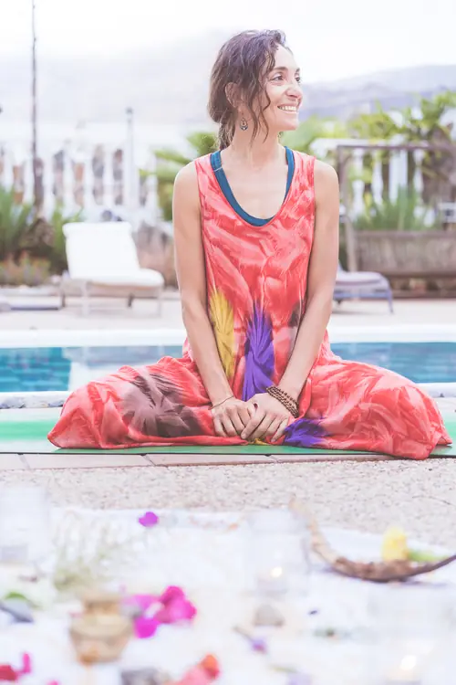
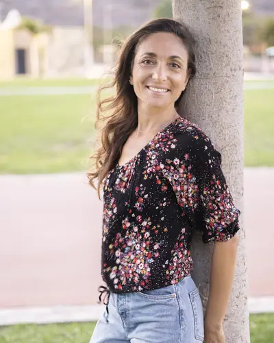

Melania Di Vara
Más de 10 años acompañando procesos de autoconocimiento y sanación emocional.

Del Yoga tradicional a la vida cotidiana
Formadora en Yoga, Meditación y Ayurveda, con más de 10 años de experiencia acompañando procesos de autoconocimiento y sanación emocional.
Me formé en escuelas tradicionales de India, explorando diferentes caminos de conocimiento y práctica, profundizando especialmente en Advaita Vedanta junto a Maa Gyaan, y en Ayurveda junto a la doctora Neetu Singh.
He acompañado a decenas de personas a recuperar confianza, salud, vitalidad, claridad, calma, motivación y serenidad, tanto en procesos individuales como grupales. Guío retiros e inmersiones en India y Europa.
Soy autora del libro en italiano Chakra. Dalla saggezza yogica alla pratica quotidiana.
Valores, método y misión
Valores
Autenticidad, escucha, disciplina consciente, respeto del recorrido individual e integración de la tradición yogica.
Método
Un enfoque que integra respiración, meditación, autobservación, plantas medicinales, Ayurveda, estilo de vida, filosofía y psicología del Yoga.
Misión
Acompañar a cada persona hacia una mayor consciencia de sí, equilibrio y estabilidad interior, con herramientas prácticas adaptadas a la vida contemporánea.